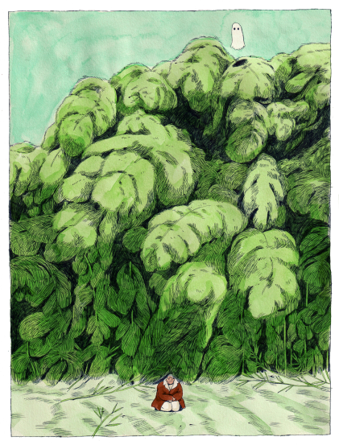
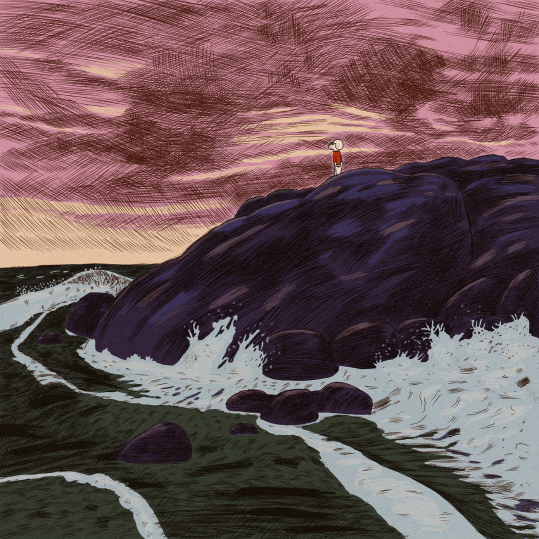

<!DOCTYPE html>
<html lang="en"></html>
<head>
    <meta charset="UTf-8">
    <meta hhtp-equiv="X-UA-Compatible" content="IE=edge">
    <meta name="viewport" content="width=device-width, initial-scale=1.0">
    <title>index.html</title>
    <link rel="stylesheet" href="css/stili4.css">
</head>

<body>
    <header>
        <h1>ARTISTS</h1>
        <nav>
            <ul>
                <input type="text" placeholder="Search...">
                <li><a href="index.html">Home</a></li>
                <li><a href="#">Profilo</a></li>
                <li><a href="#">Contatti</a></li>
            </ul>
        </nav>
    </header>
    <section class="freier">
        <div class="freiert">
          <h2>Karlotta Freier</h2>
          <p>Karlotta Freier is an accomplished Brooklyn-based artist with a background in illustration.<br> In 2021, she graduated from the MFA Illustration as Visual Essay program at<br> the School of Visual Arts. In addition to her creative pursuits, Karlotta also<br> dedicates her time to sharing her knowledge with the next generation of artists.<br> She has taught illustration at the China Academy of Art and spoken as<br> a guest speaker at universities across the United States.<br> Freier's work has also been exhibited in a variety of solo and group exhibitions,<br> as well as festivals worldwide. Her achievements have been recognized by<br> the Art Directors Club, which awarded her a Cube in 2018 and a Pencil for Best Illustration Portfolio in 2021.</p>
        
      </div>
      <div class="freieri">
      
      </div>
      </section>
      <section class="freier11">

          <div class="freier1">
          
          
      </div>
      <div class="freier2">
          
          
      </div>
      <div class="freier3">
          
          
      </div>
      </section>
      <footer>
        <div class="info">
         <ul>
             
             <li><a href="#">chi siamo</a></li>
             <li><a href="#">contatti</a></li>
    
             
             <li><a href="#">supporto</a></li>
             <li><a href="#">FAQ</a></li>
     
             
             <li><a href="#">instagram</a></li>
             
     </ul>
        </div>
        

     </footer>

</main>